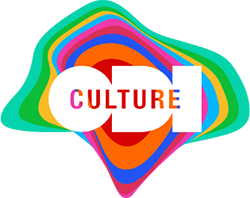

ODI co-commissions original art-work with The Space
 The Open Data Institute (ODI) has announced that it is co-commissioning an original art-work with a major new digital arts programme, The Space - launched today (Friday 13th June). ‘We Need Us’ is being created by artist, Julie Freeman using open data from the citizen science project, Zooniverse, and is curated by Hannah Redler, formerly of the Science Museum.
The project is part of the ODI’s Data as Culture programme, now in its second year.
‘We Need Us’ is one of dozens of original works that will be featured in the coming months by The Space, a new creative online platform to showcase the world’s most exciting digital art. Today’s launch at Tate Modern’s Turbine Hall is supported by artists including David Hockney, Marina Abramovic and Ai Weiwei. The Space is jointly funded by the BBC and the Arts Council.
ODI President and co-founder, Sir Tim Berners-Lee said:
Artists wake us up to all that happens in the world. The Space and the ODI can make that happen on the web.
‘We Need Us’ is a live online animated artwork that explores big data. The work concentrates on metadata which it draws from the activities of Zooniverse’s million+ participants, to create an environment of sounds and animated forms. Unlike traditional data-visualisation which helps people understand and make sense of information held in large data sets, ‘We Need Us’ investigates the unique properties of the data itself.
Artist, Julie Freeman said:
Imagine a web where we stumble and fall into art as we do in real-life. The Space is a starting point for this to happen, bringing works like ‘We Need Us’ to everyone; I’m delighted to be one of the first co-commissioned artists. Working in residence at the Open Data Institute has enabled me to work with data in a deep way, interrogating it as an art material, looking for the growth, momentum and fragility within it. The work I’m creating requires data from online activities of people to come alive. The idea is to remind people of the humanity in technology - that we need ‘us’ as much as we need it.
ODI CEO, Gavin Starks said:
Using open data as a creative material helps us understand how it touches all our lives: our own data, or data about us, about our society, our financial system, our health, our environment -- all have impacts that affect us every day, personally, locally and globally. ‘We Need Us’ is literal in its reflection of this: the work is built on millions of interactions from over a million people, working together to solve massive-scale problems. We are delighted that The Space is partnering to co-commission with ODI, and building on our Data as Culture programme - which views data as part of our cultural landscape.
Ruth Mackenzie, Launch Director of The Space said:
The Space will commission around 50 new works a year from great artists, both known and unknown, and share them freely with audiences from around the World. We are delighted that the ODI is involved in the programme. ‘We Need Us’ promises to be a dynamic and imaginative work. It’s very much in the spirit of The Space which will generate new art and maybe new art forms - what an amazing opportunity for all of us to try to see into the future.